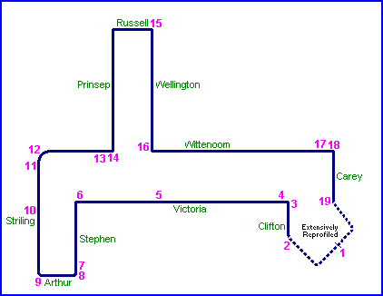

| Map of circuit location |
Bunbury, Australia
| Type: | Street Circuit | |
| Length: | 2.000 Miles / 3.219 km | |
| Used: | 1938, 1946, 1960, (1963-modified) | |
| Photos Taken: | 20th August, 2004 |
|| Contents || Clifton - Stephen | Arthur - Wittenoom | Prinsep - Carey || Home ||

Numbers on the map represent the location where the photographs were taken. Click
hyperlinks above to view photo pages
Return to racingcircuits.net's Photo Archive Main Index
Photographs and information kindly supplied by Neil Fackerell